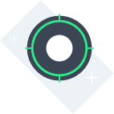
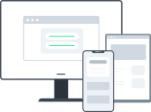
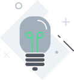
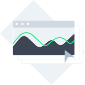

Offering a wide array of products, many companies are also offering just as many entry points as user interfaces. Oftentimes, these entry points and user interfaces lack in consistency and recognizability. Seamless transition between products is often hard to achieve, and this is one of the cornerstones of a great customer experience. Ensuring a consistent look and feel and harmonizing all the products and applications is a demanding and expensive task. It means rebuilding them from the ground up and fulfilling particular UX requirements. One of the reasons why it is so difficult is that different products are developed on different technology stacks.
We aspire to sell our customers a great customer experience and we believe that a great customer experience should be available to both customers and the people who make this customer experience possible – administrators and developers.
With this goal in mind, we have designed Luigi, which makes it possible to transform your product smoothly from a monolith to a micro-service and micro-frontend architecture. With Luigi, you build an overarching administration and business user application and re-use the functions and views of the applications currently available. Also, you can take modules or even entire applications from third-party vendors and integrate them directly into your application.
Luigi is your choice if you are using independent distributed UI teams to develop, deploy, maintain, and operate modules and end-to-end features independently. Such distributed teams do not have to make commitments to the same repository and depend on each other during the development and release cycles. This way, there is no need for any specific team to be the domain expert and fully own the entire underlying feature set and product portfolio behind the monolith UI. Another advantage is that, once developed, these independently developed features can be used by multiple solutions.
Finally, Luigi provides out-of-the-box features such as a shell bar, a navigation component, and easy-to-use functions to display alerts, confirmation messages, etc.
Make your app as consistent and easy to develop as possible
-
Pre-set UI
Do you want a standardized UI for your app which is easy to use and configure? Luigi comes with an out-of-the-box L-shaped shell bar with a variety of different menus, dropdowns and switchers. The navigation built with Fundamental Styles allows all your micro frontends to be embedded in a consistent UI. Learn more about Luigi navigation here.
 -
Responsive design
Luigi can help you quickly adapt your application to render well on a variety of devices and automatically scale the content and elements to match the screen size on which it is viewed. You can create a responsive app in two simple steps. Find out more here.
 -
Security/ID provider abstraction
Security is an important feature, so Luigi has simplified the process of authenticating users with a unique login password. Luigi Core provides ready-to-use plugins for OpenID Connect and OAuth2. We also describe how to use Google Cloud Identity with Luigi or set up your own custom authorization provider.

-
Role-based visibility restrictions
Another way to use Luigi's authorization and Core/Client API features is to make certain parts of your application only visible to some users. You can show a different view to admins and regular users, for example. This allows for more flexibility and security in your app.

-
Notification management
Luigi allows you to set up notifications and alerts for your application. The alerts are displayed in the main app, which means that you save time and effort by developing them globally, and they all have a consistent user-friendly look. Find out more about alerts here. Notifications can also be displayed by using the badge counter for top navigation items.
 -
Form- and modal management
Besides alerts, you can also add input forms, messages, and modals via your Luigi configuration. Modals are designed to look like a part of the Luigi Core app, but receive data from the micro frontend. Thus, your app looks consistent and not like a patchwork of different micro frontends. For more information check out the Luigi Core and Luigi Client API documentation.
 -
Multi language support
Offering your app in different languages allows you to reach more people. Luigi is the only micro frontend framework which also offers localization and translation features. For more information, refer to our localization example here.